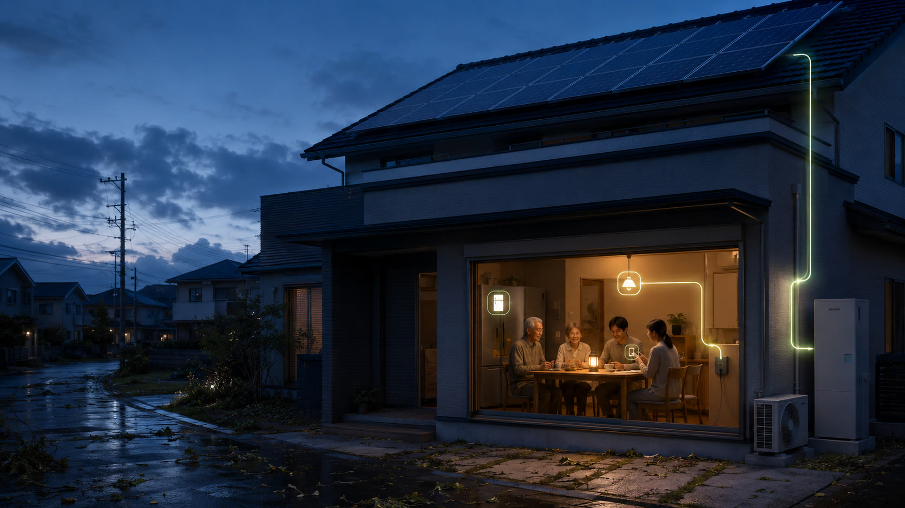
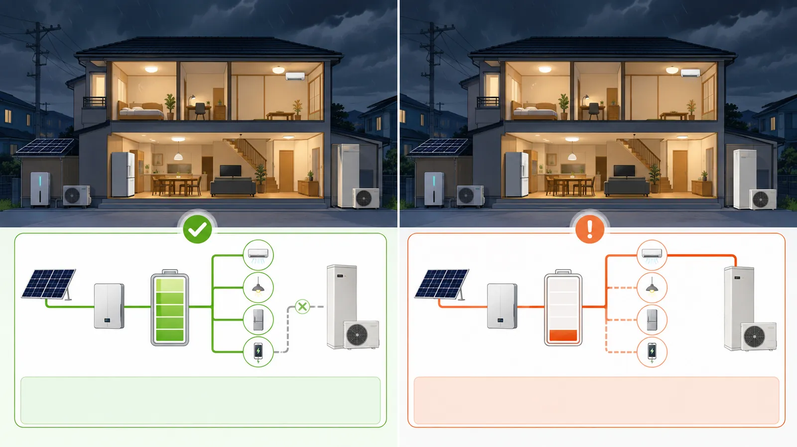
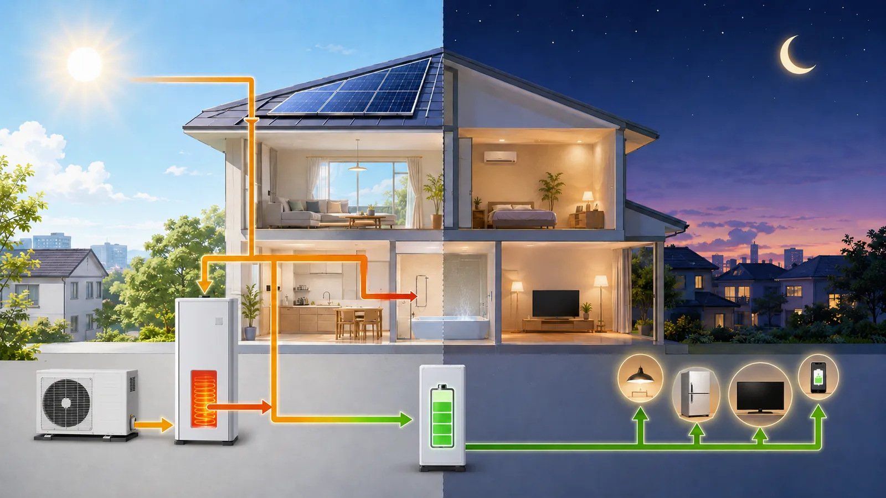

2026年9月 台風25号
62,704戸が停電
9月21日の夜に関東へ最接近 東京電力パワーグリッドのエリアで、9月22日0時19分に最大6万2,704戸が停電しました 24日の夕方になっても、約1万4,700戸で停電が続いていました
出典：電気新聞（2026年9月25日）

千葉の停電対策 ／ 蓄電池を導入したすべての方へ
家族が節電して残した電気を
夜のエコキュートが使い果たしていました
2019年の台風の夜 備えたはずの我が家で
家族は暗闇のまま朝を待っていました
お客様の前で、正座して４時間
あのクレーム対応が、私の仕事を変えました
背景は設備と暮らしの説明用イメージです 実際の被災現場の写真ではありません
いま、千葉で起きていること
2026年9月 台風25号
62,704戸が停電
9月21日の夜に関東へ最接近 東京電力パワーグリッドのエリアで、9月22日0時19分に最大6万2,704戸が停電しました 24日の夕方になっても、約1万4,700戸で停電が続いていました
出典：電気新聞（2026年9月25日）
2019年9月 房総半島台風（台風15号）
64万1千件が停電
9月9日、千葉県内で最大64万1千件が停電 一部を除いて復旧したのは9月24日で、およそ2週間かかりました この台風の夜に、この先でお話しすることが起きました
01 ／ 寺嵜の体験をもとにした再現
2019年９月、千葉を襲った台風による停電
太陽光と蓄電池を設置したお客様のお宅で起きたことです
照明も、エアコンも我慢した
それなのに、電気がなくなっていく
① 備えて安心 → ② 気づかぬうちに減る → ③ 明け方に尽きる → ④ 家族の前で気づく
台風の夜
深夜
明け方
後日
寺嵜の実体験をもとに場面を再構成しています 漫画内の会話・表情は再現表現です すべての蓄電池や給湯器で同じことが起きるわけではありません
02 ／ 私が受け止めるべきだったこと
「停電でも安心だって
言ったよな」
家族を守るために、決して安くない設備を入れてくださった
災害の夜も、家で過ごせると思ってくださった
その期待を受け取っていたのは、私です
お客様の前で正座した４時間
機器の仕様を説明すれば済む話ではありませんでした
お届けしたのは設備でも、お客様が買ったつもりだったのは「安心」だった
そのことを、突きつけられました
私は、蓄電池が何kWhためられるかを説明していました
でも、エコキュートが夜にどれだけ使うのか
その電気を、どこから取るのか
そこまでつなげて考え、伝え切れていませんでした
蓄電池も、エコキュートも、それぞれは動いていた
それでも、家族に残したかった電気はなくなった
機器が動くことと
暮らしを守れることは、違う
あの日から、設備を選ぶだけで終わらせないことが、私の仕事になりました
サステナシールド 寺嵜 忠弘
03 ／ すでに蓄電池がある方へ
蓄電池の残量は見ていても
給湯器の沸き上げ時間までは、見ていないかもしれません
停電中も給湯器へ給電する配線なら、お湯づくりにも蓄電池の電気を使います
残量を生活家電に使うつもりでも、給湯の運転によって減ってしまう場合があります
蓄電池が悪い、と言いたいのではありません
せっかく備えた設備を、必要な場面で活かしてほしいのです
給湯器がバックアップ対象でない構成もあります 実際の配線・設定・機種を確認して判断します
30秒チェック
当てはまるものを押してください 入力した内容はどこにも送信されません
当てはまった数による目安です 実際の配線・設定・機種を確認して判断します
私自身の家でも、測り直しました
当時、私が自宅で測った給湯の電力量は、１日約20kWhでした
これは一般家庭の標準値ではありません
機種、年式、使うお湯の量、季節、設定で変わります
だからこそ、蓄電池の容量だけを見ず、給湯を含めて「何にどれだけ使っているか」を確認することに意味があります
寺嵜宅での当時の個別実測です この数値を他の家庭の消費量や交換後の削減量としては使いません

04 ／ だから、今ご提案したいこと
その選択肢が、おひさまエコキュートです

おひさまエコキュートは、主に昼間にお湯を沸かす給湯器です
太陽光でつくった電気のうち、昼に余る分を毎日のお湯へ
夜のお湯づくりに頼る運転から、昼の発電を活かす運転へ見直します
昼は、お湯をつくる
夜は、家族が使う電気を考える
太陽光、蓄電池、給湯器を別々に買うのではなく、家の一日の動きとして整える提案です
昼間沸き上げ型でも、湯不足が予測されると夜間などに追加で沸き上げる場合があります
交換だけで停電中の給湯や夜間の電力確保を保証するものではありません
給湯器に給電する回路、蓄電池の出力・残量設定、停電時の運転方法まで合わせて確認します
昼間沸き上げと時間帯外の追加運転について：三菱電機 おひさまエコキュート（2026年９月確認）
交換すると、停電の夜はこう変わります
昼に沸かす機種でも、湯不足が予測されると夜間などに追加で沸き上げる場合があります 停電中にどう動くかは、給湯器に電気を送る回路・蓄電池の設定・機種で変わるため、交換のときに一緒に確認して設定します
わが家の場合はどうなるか、品番の写真から確認します
写真を送って、確認してもらう →05 ／ 「まだ壊れていない」方にこそ
お湯が出ていることと、今の暮らしに合っていることは、別の判断です
急にお湯が出なくなる前に、機種・容量・費用を比較できる 今の設備が動いている間に、工事日程も含めて検討できます
売電の条件や生活時間が変わったなら、設置当時と同じ使い方が合うとは限りません 昼の余剰電力を活かせるか確認する機会です
給湯器の交換と一緒に、蓄電池と給湯の関係まで見直す 備えの弱点を、普段のうちに確認します
| 判断すること | 今の給湯器を使い続ける | 計画的に交換する |
|---|---|---|
| 最初にかかる費用 | 買い替え費用を先送りできる | 本体・撤去・設置などの費用がかかる |
| 日々のお湯づくり | 今の機種で運転時間を変更できるか確認 | 昼の余剰電力を活かす機種を選べる |
| 選ぶタイミング | 不具合が出た際、修理や交換を判断する | 機種・見積もり・日程を比較して決める |
| 停電への備え | 今の設備の設定と給電回路を確認する | 交換設計と合わせて設定・給電回路を確認する |
まだ使える機器を手放す費用も、比較に入れます
「新しくすれば得」ではなく、「わが家なら替える意味がある」と分かる見積もりをお出しします
壊れていない今、交換する価値があるか確かめませんか
おひさまへの交換費用を見積もる →今、決める理由
2019年も2026年も、9月の台風で千葉に大きな停電が起きました 交換すれば、次の台風が来る前に、夜のお湯づくりを昼へ移しておけます
給湯省エネ2026事業では、おひさまエコキュートも補助の対象です
1台あたり基本7万円 性能の要件を満たす機種は3万円を加算
予算に対する申請額の割合は46%（2026年9月27日0時時点） 予算の上限に達すると受付が終わります
出典：給湯省エネ2026事業【公式】 対象機種・要件・その時点の受付状況は、お見積もりのときに確認します
ある日お湯が出なくなると、すぐ手に入る機種から急いで選ぶことになりがちです 今の給湯器が動いている今なら、機種・容量・費用・工事日を比べて決められます
機器が手元にあれば、多くのお宅で工事は1日で終わります お湯が使えないのは工事の間だけです 日程はご希望に合わせて調整します
替える意味があるかどうかから、一緒に確かめます
次の台風の前に、見積もりを依頼する →06 ／ 特に、こんなご家庭に提案します
この中に当てはまるものがあれば、今の給湯器が動いていても、比較を始める理由があります
設置年数だけで交換を判断しません 余剰電力が少ない場合や、現在の機器の昼間運転で対応できる場合もあります
07 ／ 私から買っていただく理由
あの夜に説明し切れなかったことを、今の提案に含めます

サステナシールド 寺嵜 忠弘 電気業界28年
給湯器の品番だけでなく、太陽光・蓄電池・電気の契約を確認 どの組み合わせなら合うかを、ご自宅の条件で考えます
通常型、おひさま型、継続使用を比較 買電を減らせる分だけでなく売電しなくなる分や交換費用も含めて、判断材料をお伝えします
普段の沸き上げと停電時の動作を確認 何が使えて、どこに条件があるかを、設備に合わせて説明します
補助金は対象機種・条件・受付状況を確認したうえでご案内します 所在地と工事内容により対応可否を確認します
声と図解でも、提案を知る
既存ページ掲載の解説動画です 機種や制度の条件は、お見積もり時点で確認します
08 ／ 決める前の疑問にお答えします
まだ使える機器を交換する費用も大切な判断材料です 今の機器を使い続ける場合と、昼間の余剰電力を使う機器へ替える場合を比較します 電気の使い方が変わった今、計画交換に意味があるかを確認しましょう
機種によっては昼間運転の機能や設定を活かせる場合があります まず品番と取扱説明書を確認します その方法で十分か、交換による違いがあるかを比較して提案します
交換だけでは保証できません 給湯器の仕様、電源、給電回路、蓄電池の出力・残量、発電量、給水条件などによります おひさま型でも夜間などに追加で沸き上げる場合があるため、停電時の運転方法も確認します
まずは品番と現在の状況をお知らせください 既存設備の施工資料や、設置業者・メーカーへの確認が必要な場合は、その内容をご案内します
機種・容量、既存設備の撤去、配管・電気工事、搬入条件などで変わります 必要な現地確認後に内訳と工事総額を提示します 写真だけで確定しない項目は、未確定のまま明示します
写真の送付や相談だけで契約にはなりません 見積もりと施工内容をご確認いただき、ご納得後に契約へ進みます 現地確認などに費用が生じる場合は事前にご案内します
最後に、寺嵜から
蓄電池を買ったとき、きっと「家族を守りたい」と思ったはずです
その思いが、必要な日に届くようにしたい
あの日、お客様からいただいた怒りを
「大変なクレームだった」で終わらせたくありません
夜につくっていたお湯を、昼へ
機器ごとの説明を、家全体の提案へ
太陽光があり、給湯器の次の使い方を考え始めた方には、おひさまエコキュートへの計画交換を提案します
壊れるまで待つ前に、一度、私に見積もりをさせてください
今、替える意味があるか どの機種なら合うか
ご自宅の条件で、お答えします
サステナシールド 寺嵜 忠弘
家族と話すための資料
交換を検討するときの比較表と確認シートを、2ページのPDFにまとめました
ガイドはサステナシールド作成の検討資料です 製品の詳しい仕様は公式カタログでご確認いただけます
おひさまエコキュートへの交換見積もり
給湯器の品番と設置場所を送っていただければ
確認事項を整理し、機種と工事総額の提案へ進めます
蓄電池がある方は、その品番も分かると確認が進みます
最初から全部そろわなくても構いません
友だち追加後、メッセージと写真を送信してください ボタンを押すだけでは相談内容は送信されません
電話受付 9:00〜19:00
① 写真とご希望を確認
② 必要に応じて現地確認
③ 機種・工事総額・運転方法をご提案
④ ご納得後に契約・工事日程を調整
相談窓口：サステナシールド 寺嵜 忠弘
ご契約・お見積り・ご請求・工事の実施：株式会社シスコムネット